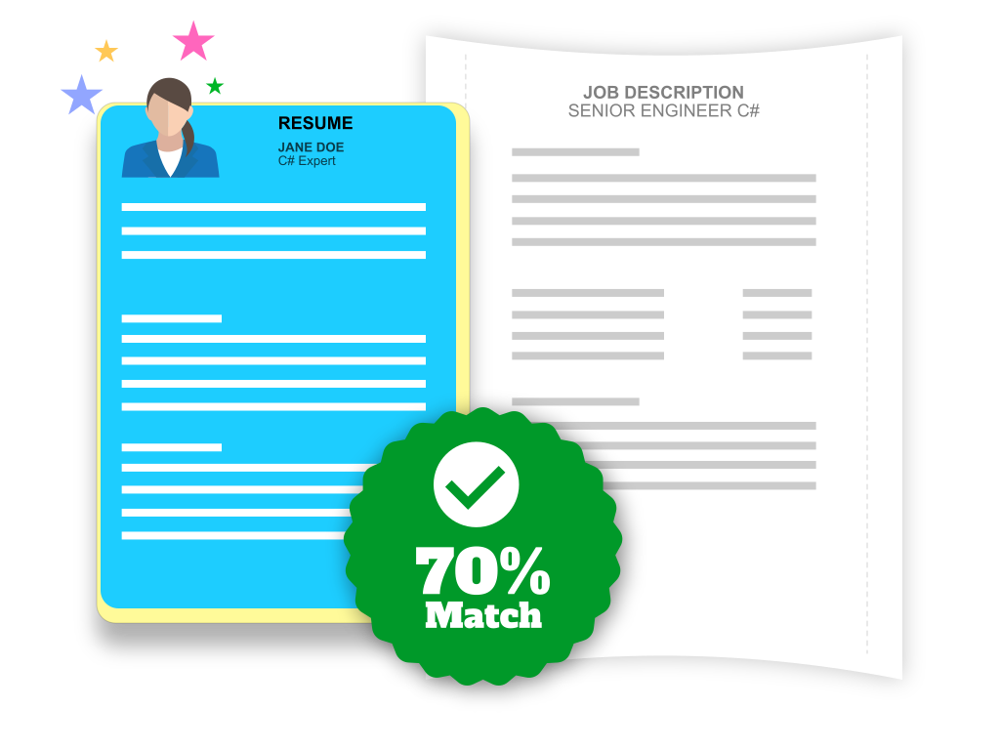

JD TO CV MATCH
We understand the kind of volumes of resumes any HR/TA team must screen to shortlist relevant candidates. This screening process is very time
consuming and error prone as it is manually done.
But now we have a technology-based solution which can be used to find out % matching score of a resume with a given job description. It helps
hiring companies in screening better, faster, and accurate.